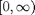

RSVPKeyboardParameters
Parameter file for the general operation of RSVPKeyboard
Contents
- Mode of acquisition system.
- List of I/O ports to use in parallel port communication.
- Language Model
- Modules
- Presentation
- GUI
- Trigger Offset Constant
- Window Duration for Classification
- Calibration Parameters
- Typing Parameters
- Phrase stopping criteria
- Mastery task level completion criteria
- Feature Extraction Methodology
- Cross Validation
- Simulation to estimate the typing performance
- Offline Analysis Screen
- Attention Monitoring - Asieh
Mode of acquisition system.
Available options are 'gUSBAmp' and 'noAmp'.
- 'gUSBAmp': Acquires data from gTec's g.USBAmp amplifier
- 'noAmp' : Uses no amplifiers to record. It generates artificial signals or can play a previously recorded '.daq' file
RSVPKeyboardParams.DAQType='gUSBAmp';%'gUSBAmp';
List of I/O ports to use in parallel port communication.
The program will send triggers to all of these ports. If there is a new device or new computer, please check the port from the Resources of the device in Device Manager.
RSVPKeyboardParams.parallelPortIOList={'4020','2020','2FD8','4FD8'};
Language Model
Enables or disables the language model. Enabled = 1 (default), Disabled = 0.
RSVPKeyboardParams.languageModelEnabled=1;
Language model file to use. The model files are stored in btlmserver/models/. Default value is 'nyt.200.36char.m6.greg.fromfst.mod'.
RSVPKeyboardParams.languageModel='nyt.200.36char.m6.greg.fromfst.mod';
Method to calculate the language model probabilities corresponding to special characters, e.g. delete character. There are two options 'fixed', which assigns a fixed probability for the special characters and 'adaptive', which changes the probability adaptively. In the current implementation only Delete character is considered as the special character.
RSVPKeyboardParams.languageModelWrapper.specialProbCalcType='fixed';
The fixed probability corresponding to the delete symbol. It should take a real value in [0,1]. The default value is 0.05.
RSVPKeyboardParams.languageModelWrapper.fixedProbability.DeleteCharacter=0.05;
The maximum value that can be assigned to the delete symbol
RSVPKeyboardParams.languageModelWrapper.adaptiveProbability.DeleteCharacter.upperLimit=0.2;
The minimum value that can be assigned to the delete symbol
RSVPKeyboardParams.languageModelWrapper.adaptiveProbability.DeleteCharacter.lowerLimit=0.03;
Language model scaling factor in . It takes the power of the probabilities obtained from the language model by the given factor. Lower the number closer to giving equal probability for each symbol.
- 1 : No modification on the language model probabilities
- 0: The probabilities coming from the language model are made equal
- 0.5 : Takes the square root of the probabilities that makes the probabilities closer to each other. (used in v1.3)
RSVPKeyboardParams.languageModelWrapper.LANGUAGEMODELSCALINGHACK=0.5;
Modules
RSVPKeyboardParams.modules = {'Presentation','GUI'};
Presentation
Parameters that affect the remote presentation
TCP/IP Communication with the Presentation IP and Port address of the main controller side. These shouldn't be changed unless trying to run the presentation on a separate computer.
RSVPKeyboardParams.IP_main='localhost'; RSVPKeyboardParams.IP_presentation='localhost'; RSVPKeyboardParams.IP_GUI='localhost'; RSVPKeyboardParams.port_mainAndPresentation=52957; RSVPKeyboardParams.port_mainAndGUI=52958;
GUI
Parameters pertaining to the remote GUI
GUI automatic launch flag Determines if the GUI is automatically launched on the same computer as the main module, or if it has to be manually launched, which allows it to be launched on any computer.
RSVPKeyboardParams.GUI.autoLaunch = true;
GUI stream flag Determines the nature of the data being sent to the GUI
RSVPKeyboardParams.GUI.NO_DATA = 1; % No data being sent. RSVPKeyboardParams.GUI.RAW_DATA = 2; % Raw data being sent. RSVPKeyboardParams.GUI.FILTERED_DATA = 3; % Filtered data being sent. RSVPKeyboardParams.GUI.AM_DATA = 4; % Attention monitoring data being sent.
Trigger Offset Constant
Trigger offset added to the trigger of the target symbol. For example, if a symbol has a trigger value of 5 when it is shown as a trial, it has a trigger value of 128+5 when it is shown as a target. This shouldn't be changed. Default value is 128.
RSVPKeyboardParams.TARGET_TRIGGER_OFFSET=128;
Window Duration for Classification
The signals are windowed after the stimulus to use the response corresponding to the stimulus. The window duration is in seconds. The default value is 0.5.
RSVPKeyboardParams.windowDuration=0.5;
Calibration Parameters
Number of trials to show per sequence in calibration. This effects the duration of calibration session and the target symbol is guaranteed to show up in the sequence.
RSVPKeyboardParams.Calibration.NumberofTrials=10;
Number of sequences in the calibration. This effects the duration of the calibration session.
RSVPKeyboardParams.Calibration.NumberofSequences=75;
Typing Parameters
These parameters are valid for the typing sessions, i.e spell, copyphrase, masterytask.
The maximum number of sequences to show in each epoch. A decision is made after showing this many sequences, if a decision is not made earlier by reaching to enough confidence level.
RSVPKeyboardParams.Typing.MaximumNumberofSequences=8;
The minimum number of sequences to show in each epoch. A decision is not made without showing at least this many sequences.
- 0 : A decision can be made without showing any trials, if enough confidence is reached using the evidence coming from the language model.
- 1 : At least one sequence will be shown before making any decisions.
- MaximumNumberofSequences = MinimumNumberofSequences : The number of sequences per epoch is constant. No adaptive early decision based on the confidence.
RSVPKeyboardParams.Typing.MinimumNumberofSequences=1;
Confidence function to calculate the confidence. Given function (default: @max) is applied on the posterior probabilities to obtain the confidence value.
RSVPKeyboardParams.Typing.ConfidenceFunction=@max;
Confidence threshold to stop the epoch and make a decision. Default value is 0.9. If max(posteriorProbabilities)>0.9, a decision is made and epoch is finished.
RSVPKeyboardParams.Typing.ConfidenceThreshold=0.9;
Number of trials in a sequence of a typing session. When it is equal to the number of trial symbols according to the imageList.xls (28 by default), the whole alphabet is shown. If it is lower, which symbols to show is decided according to the nextSequenceDecisionRule.
RSVPKeyboardParams.Typing.NumberofTrials=28;
The method to use for deciding which symbols to show in the next sequence. The trial symbols to show in a sequence are selected from possible symbol set using one of the following options
- 'Random' : Randomly without replacement.
- 'Posterior' : Using the top symbols according to the posterior probabilities calculated after the last sequence which was shown. The posterior probabilities change as more EEG evidence collected.
RSVPKeyboardParams.Typing.nextSequenceDecisionRule='Posterior';
Phrase stopping criteria
For copy phrase and mastery tasks, there exists stopping criteria to stop the typing of the current phrase and continue with the next phrase if there exists one.
Maximum allowed duration for a phrase excluding the wait times between sequences in seconds.
RSVPKeyboardParams.copyphrase.StoppingCriteria.MaximumEstimatedPhraseTime=450;
The scale for the upper limit on the number of sequences based for the copy tasks. The typing of the phrase stops when . Default value is 2.
RSVPKeyboardParams.copyphrase.StoppingCriteria.SequenceLimitScale=2;
Maximum allowed number of consecutive incorrect decisions for a phrase. Default value is 5.
RSVPKeyboardParams.copyphrase.StoppingCriteria.MaximumLengthOfIncorrectSection=5;
Mastery task level completion criteria
A level in the mastery task is completed if at least this ratio of the phrases in a set are completed successfully. If the LevelCompletionThreshold is exceeded in any set, the level is completed. Otherwise the level continues to show all the sets repeatedly.
RSVPKeyboardParams.masteryTask.LevelCompletionThreshold=2/3;
Feature Extraction Methodology
List of operators to use in the ProcessFlow of the feature extraction. The handles corresponding to the class names of the operators should be listed as a cell vector.
RSVPKeyboardParams.FeatureExtraction.operatorHandles={@downsampleObject, @pca, @rda};
List of the operation modes of each operator.
- 0 : Concatenate all the data as a single feature vector before applying the operator.
- 1 : Apply the feature extraction along the first dimension for each of the other dimensions. Initially it is applied over spatial samples.
- 2 : Apply the feature extraction along the second dimension for each of the other dimensions. Initially it is applied over time samples.
Example; [2 2 0] means first and second operator is applied for each channel separately, third operator is applied over the full feature vector.
RSVPKeyboardParams.FeatureExtraction.operationModes=[2 2 0];
List of parameters corresponding to each operator. It is a cell vector containing the parameters as a structure for each operator. RSVPKeyboardParams.FeatureExtraction.operationParameters{2}.minimumRelativeEigenvalue corresponds to the minimumRelativeEigenvalue parameter of the second operator.
RSVPKeyboardParams.FeatureExtraction.operationParameters{2}.minimumRelativeEigenvalue=1e-5;
RSVPKeyboardParams.FeatureExtraction.operationParameters{3}.lambda=0.9;
RSVPKeyboardParams.FeatureExtraction.operationParameters{3}.gamma=0.1;
Cross Validation
Cross validation fold count. Default value is 10, which applies a 10-fold cross validation.
RSVPKeyboardParams.CrossValidation.K=10;
The partitioning type of the cross validation. The possible values are
- Uniform : Folds consist of contiguous trial blocks.
- Random : Trials are selected to folds randomly without replacement.
RSVPKeyboardParams.CrossValidation.partitioningType='Uniform';
Simulation to estimate the typing performance
Enables(true)/disables(false) the simulation
RSVPKeyboardParams.Simulation.Enabled=true;
Hyperparameters to search over during the simulations. HyperparameterNames cell vector of strings containing the names of the parameters. HyperparameterValues cell vector of real vectors containing the values of the parameters to search over. Any real value taking parameter can be entered and it should be written without RSVPKeyboardParams in the beginning of the parameter name. If there are multiple parameters to search over, they may be entered together.
Example; if RSVPKeyboardParams.Simulation.HyperparameterNames = {'Typing.MaximumNumberofSequences', 'Typing.NumberofTrials'} RSVPKeyboardParams.Simulation.HyperparameterValues = {[1 2 4 8],[14 28]}; Maximum number of sequences is varied in the set {1,2,4,8} and number of trials is varied in the set {14,28}. Correspondingly the simulations are performed for 8 different scenarios.
RSVPKeyboardParams.Simulation.HyperparameterNames = {'Typing.MaximumNumberofSequences'};
RSVPKeyboardParams.Simulation.HyperparameterValues = {[4 8]};
The number of monte carlo simulations. As this number increases, simulations return more stable results, however simulations take longer time.
RSVPKeyboardParams.Simulation.MonteCarloRepetitionCount=10;
Offline Analysis Screen
Enables (true)/ disables (false) the offline analysis screen.
RSVPKeyboardParams.OfflineAnalysisScreen.Enabled=true;
Enables (true)/ disables (false) average the target and nontarget ERP plots.
RSVPKeyboardParams.OfflineAnalysisScreen.AverageERPPlotsEnabled=true;
Enables(true)/disables(false) the artifactFiltering process For enabling we MUST have Fp1-Fp2-Fc1-Fc2 channels
RSVPKeyboardParams.artifactFiltering.enabled=0;
Enables (true)/ disables (false) the "Channel Drop Warning" message on the presentation screen
RSVPKeyboardParams.artifactFiltering.channelDropWarning=0;
If artifactFiltering is enabled there is two independent options: 1. useArtifactFilteredData or not
RSVPKeyboardParams.artifactFiltering.useArtifactFilteredData=0;
2. reject sequences recognized as contaminated or not
RSVPKeyboardParams.artifactFiltering.rejectSequence=0;
Attention Monitoring - Asieh
RSVPKeyboardParams.attentionMonitoring.enabled=1; RSVPKeyboardParams.attentionMonitoring.useArtifactFilteringData=1; RSVPKeyboardParams.attentionMonitoring.processWindowLength=3;